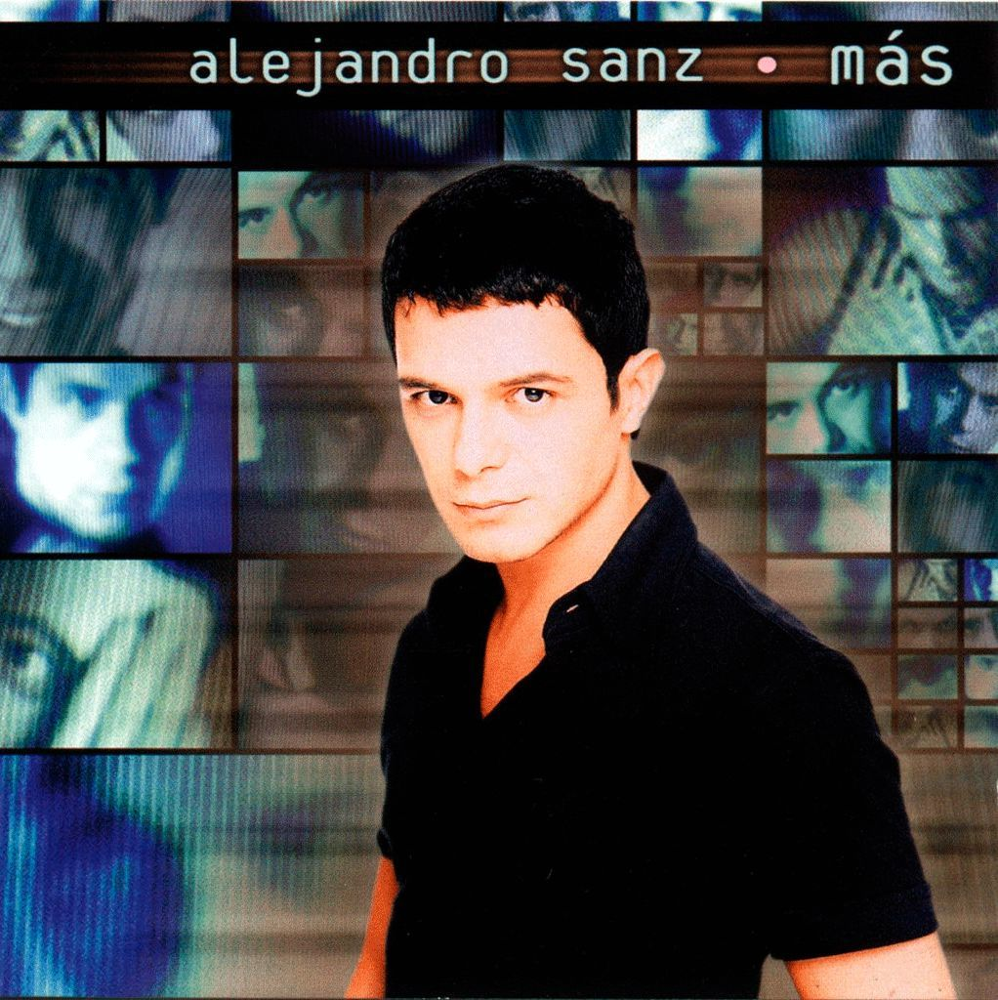
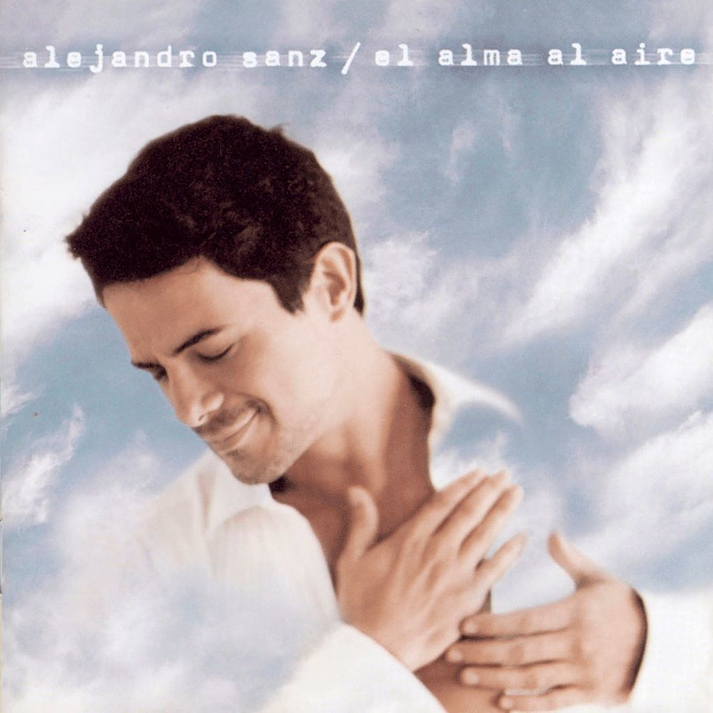
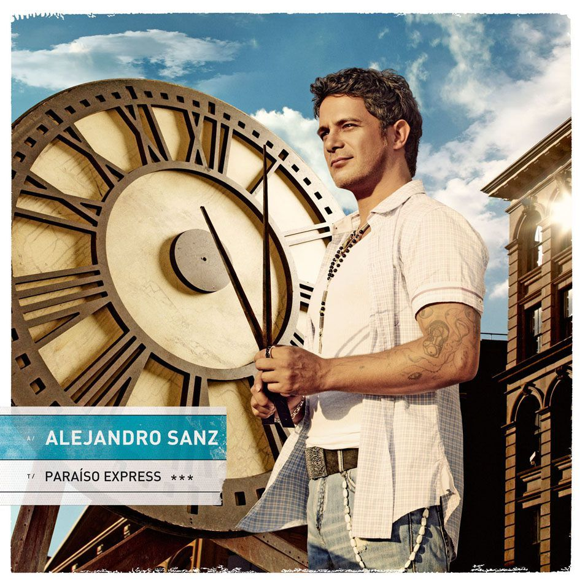
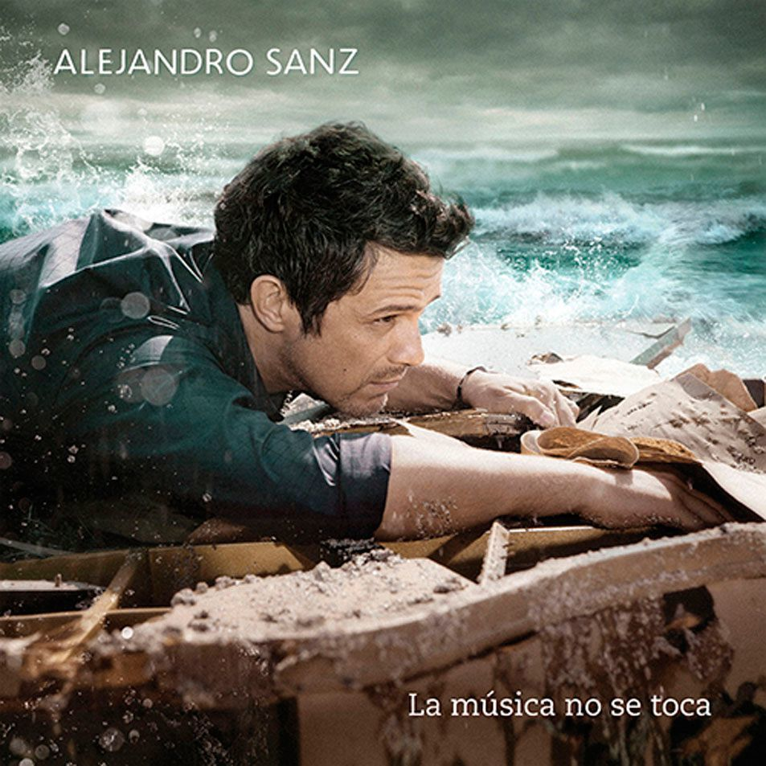

Viviendo Deprisa
1989
Canciones
- 1. Los Dos Cogidos De La Mano
- 2. Pisando Fuerte
- 3. Lo Que Fui Es Lo Que Soy
- 4. Todo Sigue Igual
- 5. Viviendo Deprisa
- 6. Se Le Apagó La Luz
- 7. Duelo Al Amanecer
- 8. Completamente Loca
- 9. Toca Para Mí
- 10. Es Este Amor
Si tú me miras
1992
Canciones
- 1. Si Tú Me Miras
- 2. Tu Letra Podré Acariciar
- 3. El Escaparate
- 4. Como Te Echo De Menos
- 5. Cuando Acabas Tú
- 6. Mi Primera Canción
- 7. Vente Al Más Allá
- 8. Qué No Te Daría Yo
- 9. Este Pobre Mortal
- 10. A Golpes Contra El Calendario
Álejandro Sanz 3
1994
Canciones
- 1. La Fuerza Del Corazón
- 2. Por Bandera
- 3. Mi Soledad Y Yo
- 4. Ellos Son Así
- 5. Quiero Morir En Tu Veneno
- 6. ¿Lo Ves?
- 7. Canción Sin Emoción
- 8. Eres Mía
- 9. Ese Que Me Dio La Vida
- 10. Se Me Olvidó Todo Al Verte

Más
1996
Canciones
- 1. Y, Si Fuera Ella!
- 2. Ese Último Momento
- 3. Corazón Partío
- 4. Siempre Es de Noche
- 4. Siempre Es de Noche
- 5. La Margarita Dijo No
- 6. Hoy Que No Estás
- 7. Un Charquito De Estrellas
- 8. Amiga Mía
- 9. Si Hay Dios...
- 10. Aquello Que Me Diste

El alma al aire
1994
Canciones
- 1. Cuando Nadie Me Ve
- 2. Hay Un Universo De Pequeñas Cosas
- 3. Quisiera Ser
- 4. Para Que Me Quieras
- 5. Llega, Llegó Soledad
- 6. El Alma Al Aire
- 7. Me Iré
- 8. Hicimos Un Trato
- 9. Tiene Que Ser Pecado
- 10. Silencio (Ghost Track)
No es lo mismo
2002
Canciones
- 1. No Es Lo Mismo
- 2. Hoy Llueve, Hoy Duele
- 3. He Sido Tan Feliz Contigo
- 4. Try To Save Your Song
- 5. Eso
- 6. Labana
- 7. Sandy A Orilla Do Mundo
- 8. 12 Por 8
- 9. Al Olvido Invito Yo
- 10. Regálame La Silla Donde Te Esperé
El tren de los momentos
2005
Canciones
- 1. Enséñame Tus Manos
- 2. A La Primera Persona
- 3. Te Lo Agradezco, Pero No
- 4. Donde Convergemos
- 5. En La Planta De Tus Pies
- 6. La Peleíta
- 7. Se Lo Dices Tú
- 8. Se Molestan
- 9. Te Quiero Y Te Temo
- 10. El Tren De Los Momentos

Paraíso Express
2008
Canciones
- 1. Mi Peter Punk
- 2. Desde Cuándo
- 3. Looking For Paradise (Feat. Alicia Keys)
- 4. Yo Hice Llorar Hasta A Los Ángeles
- 5. Sin Que Se Note
- 6. Lola Soledad
- 7. Pero Esta Tarde No Te Vas
- 8. Mala
- 9. Tú No Tienes La Culpa
- 10. Nuestro Amor Será Leyenda

La música no se toca
2011
Canciones
- 1. La Música No Se Toca
- 2. Yo Te Traigo...20 Años
- 3. No Me Compares
- 4. Llamando A La Mujer Acción
- 5. Mi Marciana
- 6. Camino De Rosas
- 7. Se Vende
- 8. Cómo Decir Sin Andar Diciendo
- 9. Camino A Casa
- 10. Nena
Sirope
2014
Canciones
- 1. A Mí No Me Importa
- 2. Capitán Tapón
- 3. Pero Tú
- 4. La Guarida Del Calor
- 5. Tú La Necesitas
- 6. Un Zombie A La Intemperie
- 7. Todo Huele A Ti
- 8. No Madura El Coco
- 9. La Vida Que Respira
- 10. Suena La Pelota Feat. Juan Luis Guerra
- 11. A Que No Me Dejas
- 12. El Silencio De Los Cuervos
- 13. El Club De La Verdad
#ElDisco
2018
Canciones
- 1. El Trato
- 2. Mi Persona Favorita (Alejandro Sanz & Camila Cabello)
- 3. No Tengo Nada
- 4. Te Canto un Son
- 5. Los Lugares
- 6. Back in the City
- 7. Este Segundo (Alejandro Sanz & Judit Neddermann)
- 8. Azúcar en un Bowl
- 9. It's OK
Sanz
2020
Canciones
- 1. Bio
- 2. Iba
- 3. Yo No Quiero Suerte
- 4. La Rosa
- 5. Si Yo Quisiera Y Si Tu Pudieras
- 6. Mares de Miel
- 7. Uno Nada Más
- 8. No Sé Qué Me Pases
- 9. Geometría
- 10. Y Ya Te Queria